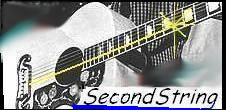

SecondString Project PageThis is the project page for SecondString, an open-source Java-based package of approximate string-matching techniques. This code was developed by researchers at Carnegie Mellon University from the Center for Automated Learning and Discovery, the Department of Statistics, and the Center for Computer and Communications Security. |  |
SecondString is intended primarily for researchers in information integration and other scientists. It does or will include a range of string-matching methods from a variety of communities, including statistics, artificial intelligence, information retrieval, and databases. It also includes tools for systematically evaluating performance on test data. It is not designed for use on very large data sets.
You can also check out a full copy of the Java source with the CVS
commands:
% cvs -d:pserver:anonymous@cvs.sourceforge.net:/cvsroot/secondstring login
% cvs -d:pserver:anonymous@cvs.sourceforge.net:/cvsroot/secondstring checkout secondstring
Thanks also to SourceForge for hosting this!